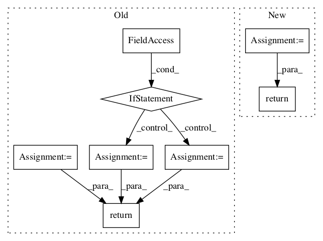

c00d5481241c1bf5fd6a206c46a55f74bb5748f2,gpflow/models/svgp.py,SVGP,build_prior_KL,#SVGP#,99

Before Change
@params_as_tensors
def build_prior_KL(self):
if self.whiten:
if self.q_diag:
KL = kullback_leiblers.gauss_kl_white_diag(self.q_mu, self.q_sqrt)
else:
KL = kullback_leiblers.gauss_kl_white(self.q_mu, self.q_sqrt)
else:
K = self.kern.K(self.Z) + tf.eye(self.num_inducing, dtype=settings.tf_float) * settings.numerics.jitter_level
if self.q_diag:
KL = kullback_leiblers.gauss_kl_diag(self.q_mu, self.q_sqrt, K)
else:
KL = kullback_leiblers.gauss_kl(self.q_mu, self.q_sqrt, K)
return KL
@params_as_tensors
def _build_likelihood(self):
After Change
@params_as_tensors
def build_prior_KL(self):
if self.whiten:
K = None
else:
K = self.kern.K(self.Z) + tf.eye(self.num_inducing, dtype=settings.tf_float) * settings.numerics.jitter_level
return kullback_leiblers.gauss_kl(self.q_mu, self.q_sqrt, K)
@params_as_tensors
def _build_likelihood(self):
In pattern: SUPERPATTERN
Frequency: 3
Non-data size: 8
Instances
Project Name: GPflow/GPflow
Commit Name: c00d5481241c1bf5fd6a206c46a55f74bb5748f2
Time:
Author: null
File Name: gpflow/models/svgp.py
Class Name: SVGP
Method Name: build_prior_KL
Project Name: deepchem/deepchem
Commit Name: b68db1aaf6abe4d2cea8321cc6f1564228dd60f5
Time:
Author: null
File Name: deepchem/models/tensorgraph/models/seqtoseq.py
Class Name: AspuruGuzikAutoEncoder
Method Name: _create_encoder
Project Name: deepchem/deepchem
Commit Name: b68db1aaf6abe4d2cea8321cc6f1564228dd60f5
Time:
Author: null
File Name: deepchem/models/tensorgraph/models/seqtoseq.py
Class Name: SeqToSeq
Method Name: _create_encoder